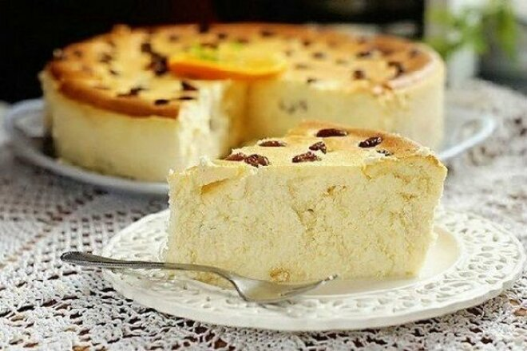
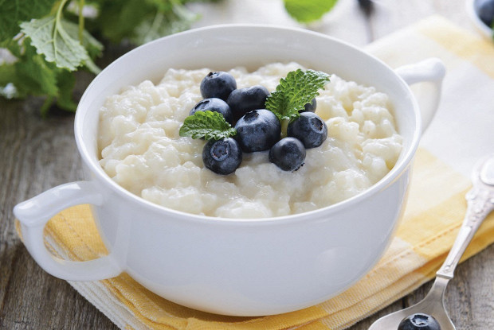

Recetas sencillas para el desayuno
Recetas de desayuno rápido
Deliciosos platos de desayuno que se pueden preparar rápidamente.

Cazuela de cuajada rápida
Muy fácil y rápido de preparar cazuela de requesón

Sobre de huevo con queso
Un plato sencillo y abundante con solo dos ingredientes principales: huevos y queso.

Gachas de arroz
El mejor desayuno son las gachas. Sabroso y saludable.